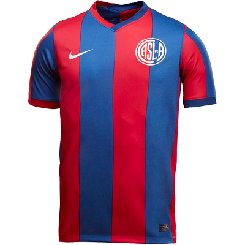
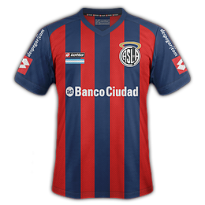

Camiseta titular con colores rojo y azul y los detalles de marcas y patrocinadores en color blanco.

Camiseta suplente de color blanco y con detalles rojo y azul, los patrocinadores en color azul.
Camiseta alternativa, utlizada como tercera equipacion con un color negro y los detalles de la misma con dorado.
Vinieron distintas marcas (prácticamente todas las líderes) y sus diferentes modelos, con bastones más anchos o más angostos, con alguna que otra revolucionaria (¿cómo olvidar aquella polémica negra y amarilla, sólo utilizada una vez, contra River, en el año 2000?) y cada una con su particular recorrido. La clásica suplente siempre fue blanca, con algún toque azul, preferentemente. Y en el costado, del lado del corazón, el escudo o un CASLA reluciente. Desde el Sapito Villar (el que más veces pudo lucirla) hasta el nigeriano Félix Orode (que la vistió apenas unos minutos, en el clásico contra Huracán), la sensación nunca cambia: llevar la azulgrana sobre la piel supone un privilegio intransferible. Y ciertamente inolvidable...
La camiseta titular de San lorenzo la podes encontrar en cualquier tienda oficial de San lorenzo y en las tiendas oficiales de nike, por un precio que ronda los 25.000 ARS.
La camiseta suplente de San lorenzo la podes encontrar en cualquier tienda oficial de San lorenzo y en las tiendas oficiales de nike, por un precio que ronda los 25.000 ARS.
La camiseta alternativa de San lorenzo la podes encontrar en cualquier tienda oficial de San lorenzo y en las tiendas oficiales de nike, por un precio que ronda los 25.000 ARS.
NUESTRAS CAMISETAS FAVORITAS

Camiseta titular utilizada en el año 2014, año en el que San lorenzo sale camepon de la libertadores.
Camiseta titular utilizada en el año 2006, fue usada por jugadores historicos del club un de ellos Ezequiel Lavezzi.
Camiseta titular utilizada en el año 2001, año en el que San lorenzo sale campeon de la Sudamericana.
Camiseta alternativa, utlizada como 3ra equipacion en el año 1999. que contiene la mistica del barsa de 1998.